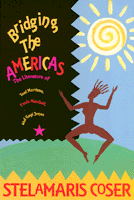

<body bgcolor="#FFFFFF" text="#000000" link="#0000FF" vlink="#CC0000" alink="#CC0000"><center><hr width="350" size="1" align="center" noshade>A powerful argument for extending the boundaries of what is categorized as American literature<hr width="350" size="1" align="center" noshade><p><a href="https://cdcshoppingcart.uchicago.edu/Cart/ChicagoBook.aspx?ISBN=9781566392662&&PRESS=temple" target="_top">Buy this book!</a> | <a href="https://cdcshoppingcart.uchicago.edu/Cart/Cart.aspx?PRESS=temple" target="_top">View Cart</a> | <a href="https://cdcshoppingcart.uchicago.edu/Cart/Cart.aspx?PRESS=temple" target="_top">Check Out</a></p><p></p></center><!--none//--><h1>Bridging the Americas</h1>
<H2>The Literature of Paule Marshall, Toni Morrison, and Gayl Jones</H2>
<h3>Stelamaris Coser</h3>
<P>cloth 1-56639-266-7 $71.50, Jan 95, <FONT COLOR=#990033>Out of Stock Unavailable</FONT>
<br>paper 1-56639-267-5 $27.95, Dec 94, <FONT COLOR=#990033>Out of Stock Unavailable</FONT>
<BR> 240 pp
5.5x8.25
1&nbsp;figure
</P><BLOCKQUOTE><I>"This book is at the forefront of American literature studies. It will add to the growing dialogue on Pan-Africanism in the diaspora, and exposes the rich multiculturalism of literature in the Americas. Coser is making her mark as an engaged and activist scholar."</I>
<br>&#151<b>Gay Wilentz</b>, author of <I>Binding Cultures: Black Women Writers in Africa and the Diaspora</I><I></I></BLOCKQUOTE>
<p>A literary study of three important black women writers, this book examines the "inter-American" characteristics in the work of Paule Marshall, Toni Morrison, and Gayl Jones, including detailed discussions of Morrison's <I>Song of Solomon</I> and <I>Tar Baby</I>, Jones's <I>Corregidora</I> and <I>Song of Anninho</I>, and Marshall's <I>The Chosen Place, The Timeless People</I>.
<p>Coser defines the inter-American characteristics in these authors' novels as a connection based on a common African heritage and a shared legacy of colonialism and racism. These three authors redefine the boundaries between the Americas, bridging the "extended Caribbean" that stretches from the U.S. Atlantic coast to Brazil. Their work reinterprets ethnic and sexual identity. Issues of race, class, and nationality overlap. History and identity are reinvented.
<p>To explore the collective forms of resistance and cultural processes in Brazil, the Caribbean, and the United States, Coser also makes provocative connections between the visibility of black women writers and the popularity of male Latin American novelists like Carlos Fuentes and Gabriel Garcia Marquéz.
<BR>&nbsp;<h2>Contents</h2><P>
<p>Acknowledgments
<br>Preface
<br>1. Stepping-Stones between the Americas: The Works of Paule Marshall, Toni Morrison, and Gayl Jones
<br>2. From the Natives' Point of View: The Ethnographic Novels of Paule Marshall
<br>3. The Redefinition of American Geography and History: Toni Morison's <I>Song of Solomon</I> and <I>Tar Baby</I>
<br>4. The Dry Wombs of Black Women: Memories of Brazilian Slavery in <I>Corregidora</I> and <I>Song for Anninho</I>
<br>5. No Final Chord: The Music of Morrison, Jones, and Marshall
<br>Notes
<br>Index
</P><BR>&nbsp;<H2>About the Author(s)</H2>
<P><b>Stelamaris Coser</b>, a native Brazilian, is Professor of American Studies and American Literature at the Federal University of Espirito Santo, Brazil.</P>
<BR><H2>Subject Categories</H2>
<p><A HREF="/tempress/literature.html" TARGET="_top">Literature and Drama</a>
<BR><A HREF="/tempress/african.html" TARGET="_top">African American Studies</a>
</p>
<p align="center"><a href="https://cdcshoppingcart.uchicago.edu/Cart/ChicagoBook.aspx?ISBN=9781566392662&&PRESS=temple" target="_top">Buy this book!</a> | <a href="https://cdcshoppingcart.uchicago.edu/Cart/Cart.aspx?PRESS=temple" target="_top">View Cart</a> | <a href="https://cdcshoppingcart.uchicago.edu/Cart/Cart.aspx?PRESS=temple" target="_top">Check Out</a></p><p><font face="Arial" size="1"><a href="copyright.html" onMouseOver="window.status='Web Copyright Policy';return true;" onMouseOut="window.status=''" title="Web Copyright Policy">&copy;</a> 2015 <a href="http://www.temple.edu" target="new" onMouseOver="window.status='Link to Temple University home page';return true;" onMouseOut="window.status=''" title="Link to Temple University home page">Temple University</a>. All Rights Reserved. http://www.temple.edu/tempress/titles/1023_reg.html</font></p>